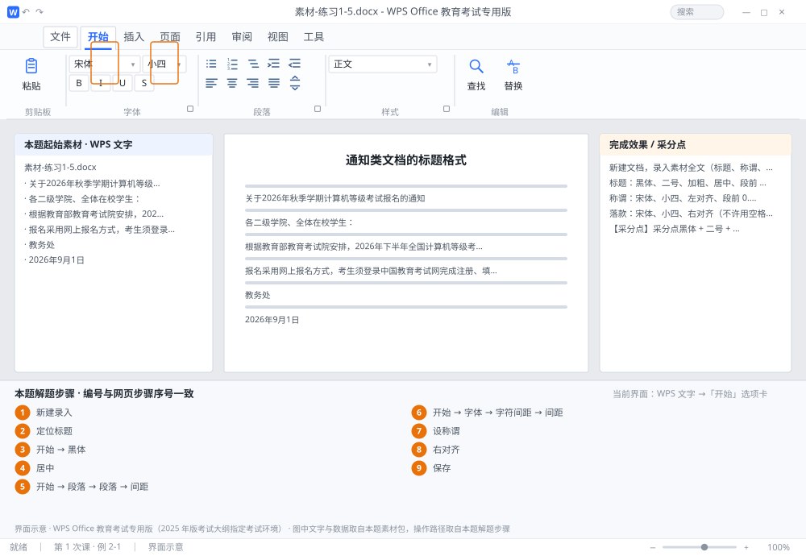

完成比对文档 · 例 2-1
通知类文档的标题格式 ｜ 第 1 次课 / WPS 文字 ｜ 网页：入门实操课.html ｜ 考试环境：WPS Office 教育考试专用版（2025 年版考试大纲指定考试环境）
用途 本页按修订后的题目要求与解题步骤生成，是交卷自查的结果基准：
逐项列出每一步应出现的可复核结果，配合模拟操作截图与解题结果文件使用。
它不是素材包的一部分，不会预置答案动作；起始素材仍从本题素材包下载。
一、本题起始素材包
目录：练习素材/练习1-5-通知标题格式/ ｜
下载包：练习素材/下载/练习1-5-通知标题格式.zip
二、题目要求
- 新建文档，录入素材全文（标题、称谓、两段正文、落款）。
- 标题：黑体、二号、加粗、居中、段前 0.5 行、段后 0.5 行、字符间距加宽 2 磅。
- 称谓：宋体、小四、左对齐、段前 0.5 行。
- 落款：宋体、小四、右对齐（不许用空格顶到右边）。
- 保存为 学号-姓名-练习2-1.docx。
三、解题步骤（编号与下方核对表、截图编号一致）
- 新建录入。Ctrl+N 新建，按本题素材包中的起始文件逐段录入，每段末尾按一次 Enter。落款两行建议合成一段、中间用 Shift+Enter，便于整体右对齐。
- 定位标题。把光标点在标题行任意位置（不必选中整行，段落格式对整段生效）。
- 设字体字号。「开始」选项卡 → 字体框下拉找不到「黑体」时，直接在框里输入"黑体"两字后按 Enter；字号框输入 二号 按 Enter（二号 = 22 磅）。
- 加粗居中。点 B（Ctrl+B）；点「居中」（Ctrl+E）。
- 设段前段后。「开始」→ 段落组右下角的小箭头（或右键 →「段落」）→ 打开「段落」对话框 →「间距」区：段前 0.5 行、段后 0.5 行 → 确定。
- 设字符间距。「开始」→ 字体组右下角小箭头 →「字体」对话框 → 切到「字符间距」选项卡 →「间距」选 加宽、「磅值」输 2 磅 → 确定。
- 设称谓。光标点到"各二级学院…"这一行 → 宋体、小四 → 左对齐（Ctrl+L）→ 段落对话框设段前 0.5 行。
- 设落款。选中落款段 → 宋体、小四 → 点「右对齐」（Ctrl+R）。不要敲空格。
- 保存。F12 另存为 学号-姓名-练习2-1.docx；顺手按 Ctrl+S 再存一次。
四、完成效果 / 采分点
采分点黑体 + 二号 + 加粗 + 居中（4 项） · 段前段后各 0.5 行 · 字符间距加宽 2 磅 · 落款为右对齐而非空格
五、逐项完成核对表
| 步骤 | 关键操作路径 | 应出现的结果（可复核） |
|---|
| 1 | 新建录入 | 新建录入 |
| 2 | 定位标题 | 定位标题 |
| 3 | 设字体字号 | 「开始」、「黑体」、22 磅 |
| 4 | 加粗居中 | 「居中」 |
| 5 | 设段前段后 | 「开始」、「段落」、「间距」、0.5 行 |
| 6 | 设字符间距 | 「开始」、「字体」、「字符间距」、「间距」、「磅值」 |
| 7 | 设称谓 | 0.5 行 |
| 8 | 设落款 | 「右对齐」 |
| 9 | 保存 | F12、学号-姓名-练习2-1.docx |
六、模拟操作截图

界面示意 · WPS Office 教育考试专用版 · 橙色编号与本题解题步骤序号一致；
图中文字与数据取自本题素材包，功能入口取自本题解题步骤。
核对方法：按网页解题步骤完成并另存自己的成稿后，逐行比对本表第 3 列的
参数、公式、区域、文件名与对象数量；再对照网页「完成效果 / 采分点」检查版式是否一致。